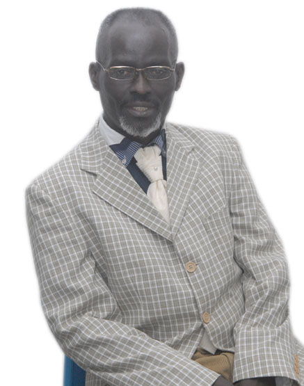

SOCIÉTÉ
DE L’OBJET SOCIAL
La SODERCO sarl fait l’exploitation minière, l’agriculture, hydrocarbures liquides et gazeux, vente et achat des produits miniers.
HISTORIQUE
Nous sommes partis d’un constat sur les potentialités des ressources naturelles que regorge la République Démocratique Du Congo avec un œil d’observateur grandement ouvert et nous avons compris la nécessité d’exploiter ces ressources. C’est pourquoi nous avons traduit notre pensée en acte en créant la Société d’Exploitation des Ressources du Congo, SODERCO en sigle, en date du 16 Mars 2009 à KINSHASA en République Démocratique du CONGO.
Et cette société a connu comme membres fondateurs les personnes ci-après :
Ne nous suffisant pas à nous mêmes, nous nous sommes investis à intéresser d’autres partenaires étranger afin d’étendre le cercle de nos activités en s’adaptant à la mondialisation et créer une classe moyenne en République Démocratique du Congo.
ZONE D'ACTIVITES
Sa zone d’exploitation minière est subdivisée en cinq groupes localisés respectivement dans les provinces suivantes :
· Katanga,
· Province oriental,
· Bandundu.
· Kasaï-Oriental et Kasaï-Occidental.
Les opérations d’exploitation minière couvrent près de 400 km2.
Considération générale
Au regard des avantages comparatifs que présente la SODERCO sarl pour le sol et sous-sol de République Démocratique du Congo, il fait d’aucun doute que ceux-ci apparaissent comme l’une des meilleures destinations des investisseurs en Afrique.
Ce pays contient des grands espaces pour l’exploitation d’importantes activités des développements selon la vision de la SODERCO sarl.
Le Congo est qualifié de terre d’investissement, un pays béni des dieux ou encore de Terre d’opportunités au regard des potentialités qui la caractérisent, lesquelles offrent des occasions inimaginables dans tous les secteurs d’activités économiques.
ORGANISATION ADMINISTRATIVE
Au sein de la société SODERCO sarl existent des structures pour une gestion participative
La SODERCO sarl est une Société Privée à Responsabilité Limitée qui est administrée par Monsieur Ali Binene Kayeye qui en est l'Administrateur Délégué Général désigné par l'Assemblée Générale ordinaire.
Le Conseil désigne parmi ses membres un Administrateur Général chargé de la gestion courante de l'entreprise.
L’Administrateur Général est assisté dans ses différentes missions par un ensemble de directions couvrant toutes les activités de la SODERCO sarl dont des directions techniques
Administrateurs:
Administrateur Directeur Général Ali BINENE KAYEYE

Joao CLAUDIO
Répresentant de SODERCO en Italie et Directeur Commerciale
sales@sodercosarl.org
IMPLANTATION
La SODERCO sarl est principalement implantée dans Cinq provinces de la RD Congo
En tant qu’une Société d’Exploitation des Ressources du Congo, SODERCO sarl en sigle, exploite et commercialise, depuis 2009 le minerais ; des pierres précieuses et semi-précieuses en République de Démocratique du Congo et à l’étranger. Elle opère notamment dans la Province du Katanga, Kasaï Oriental, Kasaï Occidental, Maniema et BANDUNDU
Ses produits sont acheminés en passant par deux Ports, le Port de l’Afrique du Sud/ DURBAN ou celui de la TANZANIE/ DAR ES SALAAM ou directement du Port de Matadi vers le Port de ses clients implantés notamment dans plusieurs pays de l’Europe occidentale, en Chine ou aux USA
CADRE JURIDIQUE
Il existe une législation Officielle dans le Cadre de l’exploitation minière en République Démocratique Du Congo représenté par un Code Minier qui est un document permettant la transparence et la sécurité des investissements dans le secteur minier. Ci-après vous trouverez l’entièreté du texte y relatif.
Pour plus de précision, vous pouvez lire le code minier de la R.D. Congo .
APPEL AUX INVESTISSEURS
La SODERCO sarl invite par conséquent tous les investisseurs nationaux et étrangers à lui faire confiance dans sa stratégie d’entreprise pour les investissements durables dans les divers secteurs d’activités selon son statut d’une manière générale.
La SODERCO pourra s’intéresser à tout acte et toute opération financière, Industrielle, commerciale, de développement des ressources humaines, des ressources mobilières ou immobilières se rattachant directement ou indirectement à son objet ou pouvant faciliter sa réalisation ?
Elle pourra également s’intéresser par voie d’apport ou de fusion, Joint-venture, de souscription d’intervention financière ou de tout autre manières à n’importe quelle entreprise ou société qu’elle qu’en soit son activité.
Bienvenue à tous les investisseurs qui ont choisi la R.D.Congo comme leur seconde patrie pour l’investissement à travers SODERCO sarl.
la R.D.C recèle en son immense sous-sol des richesses naturelles d’une abondance et d’une variété extraordinaires ce qui lui vaut par ailleurs le qualificatif de « Scandale géologique » ; cette réalité confère au pays un rôle crucial au regard de l’émergence de son propre marché et de plusieurs autres marchés dans le monde tel que la Chine, l’Inde, Brésil, etc.
Dans les zones d’exploitation de SODERCO sarl., il y a une gamme variée de minerais et de matières précieuses et semi-précieuses tels que le cuivre, l’or, le Diamant, le Cobalt, le Fer, Argent, Plomb, Platinium, Nickel, Tourmaline, Colombo-Tantalite, Etain, Platine, Cassitérite, Béryl, Wolframite,…
Le Congo est subdivisé en plusieurs lots minéralogiques Zone 1 :(Cuivre, Cobalt, Or) c’est dans le Sud-ouest du Katanga. Zone 2 : (Etain, Coltan, Or) dans le centre-Est du Congo Katanga et Maniema. Zone 3 : (Diamant, Or, Cuivre) dans le centre cuvette du Congo Kasaï-Oriental et Occidental). Zone 4 : (Or, Platine…) dans le Nord est du Congo (Kisangani). Zone 5(Hydrocarbure et Gaz méthane) dans le Nord-Ouest du Congo Equateur, Bandundu et Bas-Congo.
. |